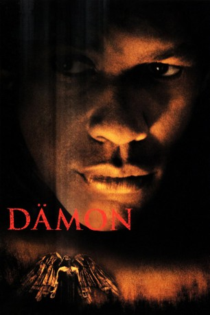

gesehen am 12.09.2016
gesehen am 12.09.2016Alternativ: Fallen gesehen am 12.09.2016
 
 IMDB-Wertung: 7.0 / 10
IMDB-Wertung: 7.0 / 10  Metascore:
Metascore: 
Detective John Hobbes hat einen bestialischen Serienkiller zur Strecke gebracht und dessen Hinrichtung mit eigenen Augen beobachtet. Doch wenig später geht die unheimliche Mordserie weiter. Für Detective Hobbes beginnt ein unbeschreiblicher Alptraum...
Jahr: 1998
Dauer: 124 Minuten
FSK: 16
Land: USA Studio: Warner Bros.Tonspuren: DD5.1 - ,
Untertitel:
Auflösung: 1080p (1920x800) Größe: 7075 MB
Genre: Action, Krimi, Drama, Fantasy, Mystery, Thriller
Regisseur: Gregory Hoblit
Drehbuch: J.C. Staff
Soundtrack:
Darsteller:
 Denzel Washington als John Hobbes
Denzel Washington als John Hobbes John Goodman als Jonesy
John Goodman als Jonesy Donald Sutherland als Lt. Stanton
Donald Sutherland als Lt. Stanton Embeth Davidtz als Gretta Milano
Embeth Davidtz als Gretta Milano James Gandolfini als Lou
James Gandolfini als Lou Elias Koteas als Edgar Reese
Elias Koteas als Edgar Reese Robert Joy als Charles
Robert Joy als Charles Frank Medrano als Charles' Killer
Frank Medrano als Charles' Killer Reno Wilson als Mike
Reno Wilson als Mike Aida Turturro als Tiffany
Aida Turturro als Tiffany Jerry Walsh als Fat Man
Jerry Walsh als Fat Man Bob Rumnock als Schoolteacher
Bob Rumnock als Schoolteacher Cress Williams als Detective Joe
Cress Williams als Detective Joe Jim Grimshaw als Warden
Jim Grimshaw als Warden Michael Shamus Wiles als Prison Guard
Michael Shamus Wiles als Prison Guard Barry Shabaka Henley als Uniformed Cop
Barry Shabaka Henley als Uniformed Cop Chuck Jeffreys als Transit Cop
Chuck Jeffreys als Transit Cop Jason George als College Kid
Jason George als College Kid Graham Beckel als John Reynolds , uncredited
Graham Beckel als John Reynolds , uncredited Casey Kasem als Shaggy Rogers , archive footage, uncredited
Casey Kasem als Shaggy Rogers , archive footage, uncredited Gary Rodriguez als Detective , uncredited
Gary Rodriguez als Detective , uncreditedDatei: X:\1998\Dämon (1998, FSK16, 1920x800).mkv seit 12.09.2016
Festplatte: HD 1996-2002
 Es gibt insgesamt 86 Filme in der Gruppe '1998'
Es gibt insgesamt 86 Filme in der Gruppe '1998'